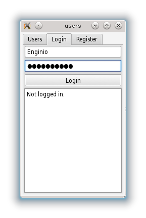

Enginio QML Examples - Users
The Users example introduces user registration, authentication, and browsing.
Introduction
This example will demonstrate how to register and authenticate a user, and what kind of information is attached to an authenticated session. This is a simple example, and data access rights management is not covered here. For such information, please refer to the Social Todo example.

There is no special need for the backend setup. This example will use only predefined structures, which are the same for every backend.
The example is an application that shows users registered in the backend, allows registration of new users, and shows how to login in separate tabs.
Each backend contains the "users" object type, which defines a structure that stores all basic data about an application's users. The collection of "users" is not really different from any other collection. Therefore, we do not need any special methods to manipulate it. Typical data associated with a user is:
- username - required name used for logging in.
- email - unique email address of a user.
- firstName, lastName - user's credentials (optional).
- password - write-only property, this value is used during authentication.
The users object can be extended by custom properties too.
Note: username and password are always required and cannot be empty.
General Example Structure
This example uses QtEnginio library together with Qt Quick Controls, therefore both have to be imported.
import Enginio 1.0 import QtQuick.Controls 1.0 import QtQuick.Layouts 1.0
We will also use a common EnginioClient connection as shown here:
EnginioClient { id: enginioClient backendId: backendHelper.backendId onError: console.debug(JSON.stringify(reply.data)) }
The example is organized into separate tabs by using TabView. Each tab shows a different functionality.
Browsing User Data
The most convenient method to browse users is to use EnginioModel. The model can automatically download all data that we need. It is sufficient to set three properties: client, query and operation as shown below:
model: EnginioModel { id: enginioModel client: enginioClient operation: Enginio.UserOperation query: {"objectType": "users" } }
The model is used directly by TableView, in which we define data that will be shown.
TableViewColumn { title: "First name"; role: "firstName" } TableViewColumn { title: "Last name"; role: "lastName" } TableViewColumn { title: "Login"; role: "username" } TableViewColumn { title: "Email"; role: "email" }
User Authentication
Authentication is quite easy. The only thing that needs to be done is to assign an identity, for example, EnginioOAuth2Authentication object to EnginioClient::identity. After a while, EnginioClient::authenticationState will change and sessionAuthenticated or sessionAuthenticationError will be emitted.
The first thing we need to do is to create an identity object: EnginioOAuth2Authentication
EnginioOAuth2Authentication { id: identity user: login.text password: password.text }
Then, depending on the state of the application, we assign the object to our enginioClient instance. There are four possible states, defined by Enginio::AuthenticationState. After assigning the Identity object, the state changes from the initial NotAuthenticated to Authenticating.
enginioClient.identity = identity
Once the authentication query has finished, the state changes to Authenticated or AuthenticationFailure depending on the authentication result. Null assignment to the identity causes the session to terminate immediately:
enginioClient.identity = null
For educational purposes, in the example we also show a log window with data attached to a session that is changing state.
Connections { target: enginioClient onSessionAuthenticated: { data.text = data.text + "User '"+ login.text +"' is logged in.\n\n" + JSON.stringify(reply.data, undefined, 2) + "\n\n" } onSessionAuthenticationError: { data.text = data.text + "Authentication of user '"+ login.text +"' failed.\n\n" + JSON.stringify(reply.data, undefined, 2) + "\n\n" } onSessionTerminated: { data.text = data.text + "Session closed.\n\n" } }
Registering a New User
Registration of a new user is as simple as adding a new object to the users collection. It can be achieved by using the create function, as shown below:
var reply = enginioClient.create( { "username": login.text, "password": password.text, "email": userEmail.text, "firstName": userFirstName.text, "lastName": userLastName.text }, Enginio.UserOperation)
We could also use the EnginioModel::append method in the browsing example to accomplish the same task.
Files: